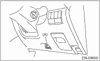

1. Prepare the Subaru Select Monitor kit. 

2. Connect the diagnosis cable to the Subaru Select Monitor.
3. Insert the cartridge to Subaru Select Monitor.

4. Connect the Subaru Select Monitor to data link connector located in the lower portion of the instrument panel (on the driver’s side).

|
(A) |
Data link connector |
CAUTION:
Do not connect any scan tools except the Subaru Select Monitor or the general scan tool.
5. Turn the ignition switch to ON (engine OFF) and Subaru Select Monitor switch to ON.

|
(A) |
Power switch |
6. On the «Main Menu» display screen, select {Each System Check} and press the [YES] key.
7. On the «System Selection Menu» display screen, select {Engine Control System} and press the [YES] key.
8. Press the [YES] key after the information of engine type has been displayed.
9. On the «Engine Diagnosis» display screen, select the {System Operation Check Mode} and press the [YES] key.
10. The following items are displayed on the display.
|
Display |
|
Fuel Pump Control |
|
Idling Ignition Timing Fixed |
|
Idle Speed Control |
|
Injector Control |
|
EGR Valve Control |
1. FUEL PUMP CONTROL (OFF OPERATION)
CAUTION:
After carrying out the Operation Check Mode, perform the Clear Memory Mode .
1. On the «System Operation Check Mode» display screen, select {Fuel Pump Control} and press the [YES] key.
2. On the «Fuel Pump Control» display screen, select the {OFF Operation} and press the [YES] key.
3. On the «Start the Engine» display screen, start the engine and press the [YES] key.
4. Pressing the [NO] key completes the OFF operation. The display will then return to the «Fuel Pump Control» screen.
2. FUEL PUMP CONTROL (ON/OFF OPERATION)
CAUTION:
After carrying out the Operation Check Mode, perform the Clear Memory Mode .
1. On the «System Operation Check Mode» display screen, select {Fuel Pump Control} and press the [YES] key.
2. On the «Fuel Pump Control» display screen, select the {ON/OFF Operation} and press the [YES] key.
3. On the «Turn IG SW On While Engine is Stopped» display screen, press the [YES] key.
4. Pressing the [NO] key completes the ON/OFF operation. The display will then return to the «Fuel Pump Control» screen.
3. IDLING IGNITION TIMING FIXED
CAUTION:
After carrying out the Operation Check Mode, perform the Clear Memory Mode .
1. On the «System Operation Check Mode» display screen, select {Idling Ignition Timing Fixed} and press the [YES] key.
2. On the «Start the Engine» display screen, start the engine and press the [YES] key.
3. Pressing the [NO] key completes the Idling Ignition Timing Fixed. The display will then return to the «System Operation Check Mode» screen.
CAUTION:
After carrying out the Operation Check Mode, perform the Clear Memory Mode .
1. On the «System Operation Check Mode» display screen, select {Idle Speed Control} and press the [YES] key.
2. On the «Start the Engine» display screen, start the engine and press the [YES] key.
3. On the «Idle Speed Control» display screen, press the [] key or [] key to change the setting value and press the [YES] key.
The value can be set within the range of 500 rpm — 2000 rpm in increments of 50 rpm. However, the actual idle speed that can be controlled differs depending on the vehicle model.
4. Pressing the [NO] key completes the Idle Speed Control. The display will then return to the «System Operation Check Mode» screen.
5. INJECTOR CONTROL (INJECTION STOP MODE)
CAUTION:
After carrying out the Operation Check Mode, perform the Clear Memory Mode .
1. On the «System Operation Check Mode» display screen, select the {Injector Control} and press the [YES] key.
2. On the «Injector Control» display screen, select the {Injection Stop Mode} and press the [YES] key.
3. On the «Injection Stop Mode» display screen, select the injector number to start the engine and press the [YES] key.
4. On the «Start the Engine» display screen, start the engine and press the [YES] key.
5. Pressing the [NO] key completes the Injection Stop Mode. The display will then return to the «Injector Control» screen.
6. INJECTOR CONTROL (INJECTION QUANTITY CONTROL)
CAUTION:
After carrying out the Operation Check Mode, perform the Clear Memory Mode .
1. On the «System Operation Check Mode» display screen, select the {Injector Control} and press the [YES] key.
2. On the «Injector Control» display screen, select the {Injection Quantity Control} and press the [YES] key.
3. On the «Start the Engine» display screen, start the engine and press the [YES] key.
4. On the «Injection Amount Control» display screen, press the [] key or [] key to change the setting value and press the [YES] key.
The value can be set within the range of 0 — 20% in increments of 1%.
5. Pressing the [NO] key completes the Injection Quantity Control. The display will then return to the «Injector Control» screen.
CAUTION:
After carrying out the Operation Check Mode, perform the Clear Memory Mode .
1. On the «System Operation Check Mode» display screen, select the {EGR Valve Control} and press the [YES] key.
2. On the «Start the Engine» display screen, start the engine and press the [YES] key.
3. On the «EGR Valve Control» display screen, press the [] key or [] key to change the setting value and press the [YES] key.
The value can be set in increments of 1 STEP. However, the actual STEP counts that can be controlled differs depending on the vehicle model.
4. Pressing the [NO] key completes the EGR Valve Control. The display will then return to the «System Operation Check Mode» screen.
NOTE:
For detailed operation procedure, refer to the “SUBARU SELECT MONITOR OPERATION MANUAL”.